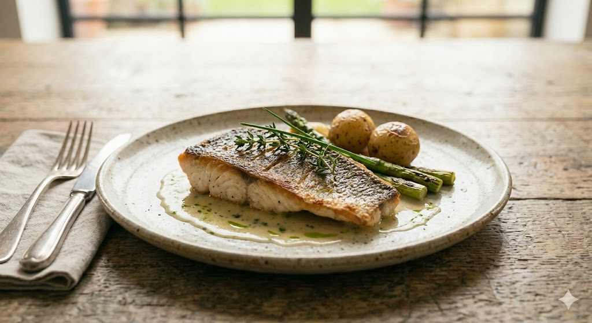
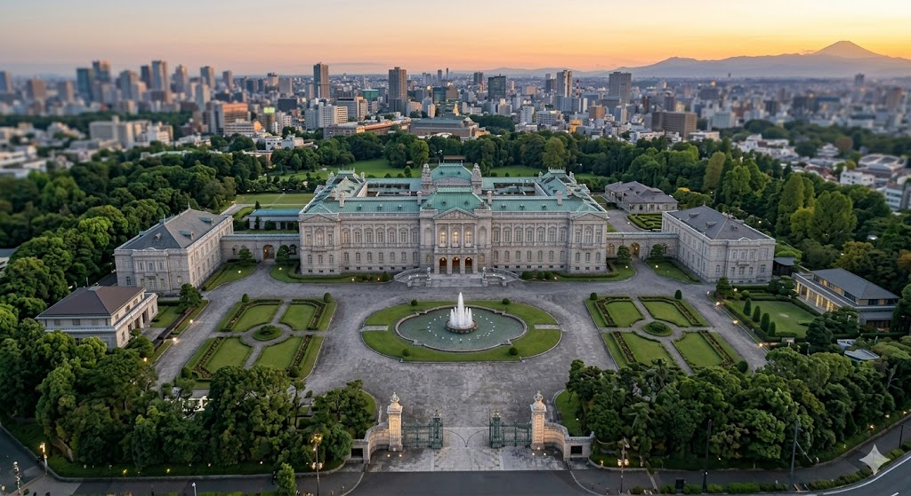
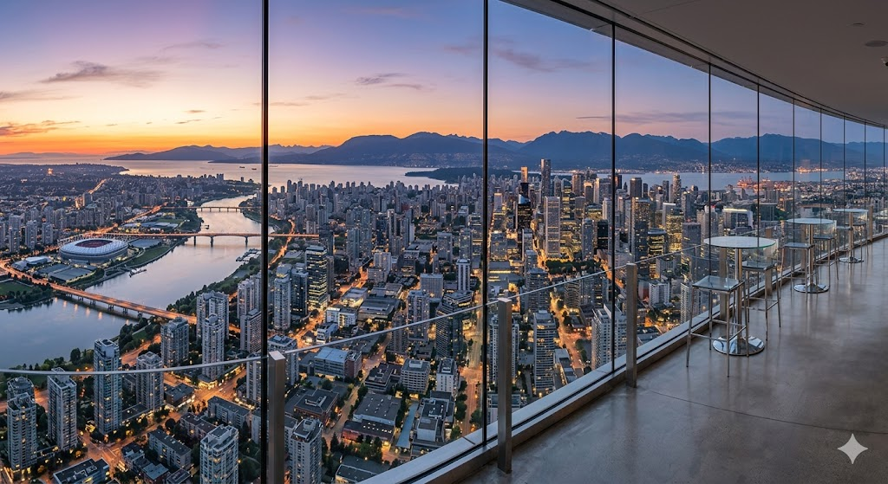

WESTIN SENDAI | RESTAURANT SYMPHONY
都内なら五万円を下らない、
最高級のクオリティを誇るモダンフレンチ。

その日一番の状態のスズキを厳選。豊かな海が育んだ脂ののりと、上品な白身の旨みを最大限に引き出します。
低温でじっくりと皮目から焼き上げ、身にストレスを与えず、極限まで柔らかく仕上げる職人技。
一皿がまるで一枚の絵画のように。シンフォニーの名に相応しい、色彩やかな旋律がテーブルを彩ります。
接待、誕生日、プロポーズ。
大切な瞬間にこそ、選ばれる理由があります。
都内と同等のサービスとクオリティを、仙台ならではの開放感とともに。


「はじめての接待でしたが、大きな窓から遠くの山々まで見渡せる素晴らしいロケーションで、入店した瞬間から特別な気分になれました。このクオリティをこのお値段でいただけるなんて最高です。」
— 接待利用のお客様
「サンリオファンの方はもちろん、それ以外の私たちでも世界観に思わず可愛い！と心躍る雰囲気でした。食事はスイーツ、セイボリーとも一品一品工夫が凝らされており美味しく頂けました。」
— アフタヌーンティー利用のお客様
東北自動車道 仙台宮城ICより約15分。ホテル専用駐車場をご利用いただけます（レストラン利用による割引あり）。
JR仙台駅 西口より徒歩約9分。地下鉄南北線 仙台駅 南2出口より徒歩約6分。